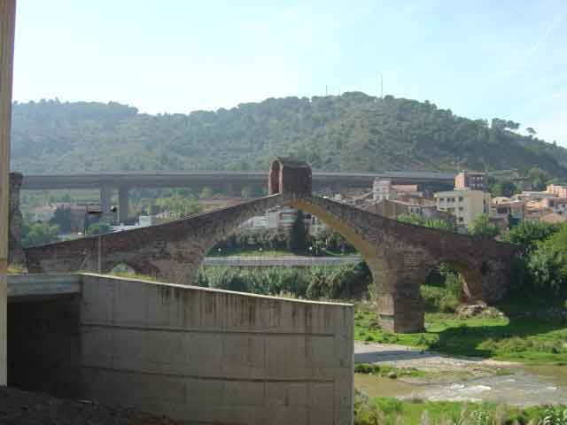
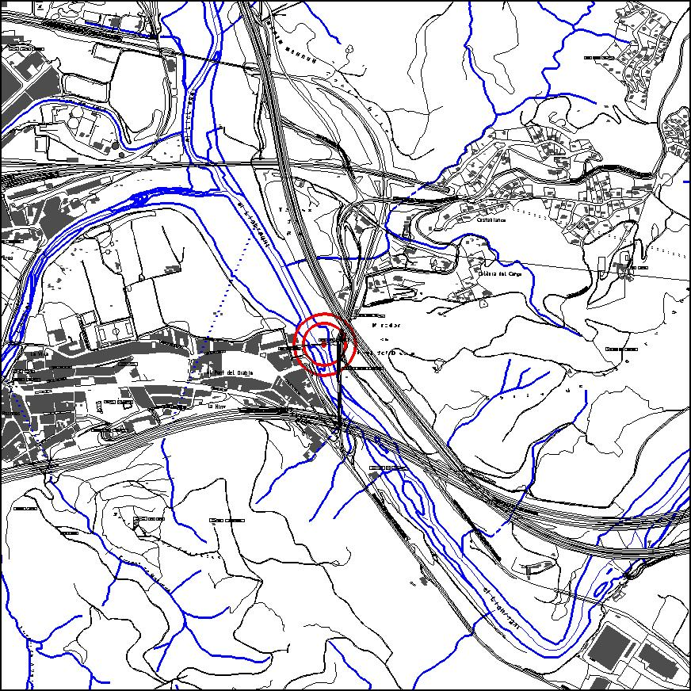

|  |  |
Nom de l’element: Pont del Diable
Clau d’identificació: B.02
Nucli o indret: Riu Llobregat.
UTM: X= 411.405, Y= 4.592.225, 40 m snm.
Règim del sòl: Sòl no urbanitzable.
1.1. Època de construcció i tipologia:
Pont de pedra datat del segle II dC, amb intervencions posteriors. Formava part del recorregut de la Via Augusta. El pont actual és asimètric respecte l’eix del riu. Presenta tres arcs, un central de gran llum i apuntat, i dos laterals més reduïts, un apuntat i un de mig punt. Té una coberta central a l’eix del pont amb una coberta inclinada a dues aigües i una volta de canó interior. La cronologia de les seves intervencions és la següent: al s.II dC es fan els arcs i el basament del pont romà; al 1283 es fa el pont gòtic; al 1768 es reconstrueix el punt; al 1928 es restaura l’arc romà; al 1933 es desenterren els sòcols de l’arc romà per la construcció de la carretera, es duu a terme el rebaix de les baranes i es construeixen les escales. Va ser volat durant la Guerra Civil Espanyola. La meitat del pont pertany al municipi de Martorell i l’altra meitat a Castellbisbal.
1.2. Estat de conservació:
Molt bo. L’estructura portant i les voltes presenten un bon estat de conservació. El paviment està més deteriorat.
1.3. Ús actual:
Pont per a vianants, monument històric.
1.4. Accés:
Accés fàcil des de la C-243 o bé des de Martorell.
Monumentd’època romana que compta amb un bon estat de conservació. D’altra banda, es tracta d’un dels elements més importants de la Via Augusta al seu pas pel Baix Llobregat, via que està en procés de recuperació.
3.1. Usos admesos:
3.2. Condicions d’ordenació:
Segons Pla Especial a redactar.
3.3. Accés i serveis:
Des de la C-243 o bé des de Martorell.
BCIN (Bé Cultural d’Interès Nacional)
Aquest bé complirà allò descrit als art. 33, 34,35 i 36 de la Llei de Patrimoni Cultural, així com els deures fixats als art. 21 i 25.
Monument històric. Decret 03/06/1931, Gaseta 04/06/1931. (Número Registre BCIN: 157-MH, Número Registre BIC: R.I.51-0425).